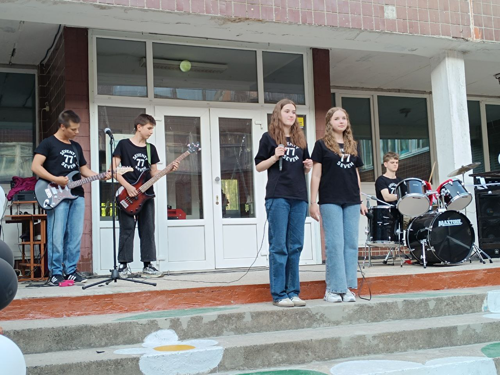

SOUNDS OF SAM.
Composer and performer. Exploring the intersection of cinematic soundscapes and live musical expression.
Live Appearances
Documented performances and stage recordings.
Performance for a contest 04.05.2024
Performance for a contest 23.04.2023
Seventy Seven
A collaborative musical project. We organize charity concerts, perform at various school events, and participate in regional music contests.


Concert 05.27.2025

Solo Works
Personal sound experiments and behind-the-scenes clips from my home studio.
Latest Tracks
You Think You Have Time
Original Composition
0:00
0:00
Feeling
Original Composition
0:00
0:00